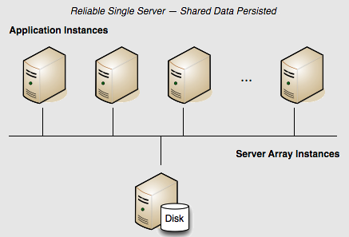

Terracotta Cluster with Reliability using Fast Restart (FRS)
Persistence: Yes | Failover: No | Scale: No
The configuration above may be advantageous in development, but if shared in-memory data must be persisted, the server should be configured to use its local disk. Terracotta servers achieve data persistence with the Fast Restart (FRS) feature.
Fast Restartability
The Fast Restart (FRS) feature provides enterprise-ready crash resilience by keeping a fully consistent, real-time record of your in-memory data. After any kind of shutdown - planned or unplanned - the next time your application starts up, all of your BigMemory Max data is still available and very quickly accessible.
The Fast Restart feature persists the real-time record of the in-memory data in a Fast Restart store on the server's local disk. After any restart, the data that was last in memory (both heap and off-heap stores) automatically loads from the Fast Restart store back into memory. In addition, previously connected clients are allowed to rejoin the cluster within a window set by the <client-reconnect-window> element.
To configure the Terracotta server for Fast Restartability, add and enable the <restartable> element in the tc-config.xml.
<?xml version="1.0" encoding="UTF-8" ?>
<tc:tc-config xmlns:tc="http://www.terracotta.org/config"
xmlns:xsi="http://www.w3.org/2001/XMLSchema-instance"
xsi:schemaLocation="http://www.terracotta.org/schema/terracotta-9.xsd">
<servers>
<server name="Server1">
<data>/opt/terracotta/server1-data</data>
<tsa-port>9510</tsa-port>
<jmx-port>9520</jmx-port>
<tsa-group-port>9530</tsa-group-port>
<management-port>9540</management-port>
<dataStorage size="4g">
<offheap size="4g"/>
</dataStorage>
</server>
<!-- Fast Restartability must be added explicitly. -->
<restartable enabled="true"/>
<!-- By default the window is 120 seconds. -->
<client-reconnect-window>120</client-reconnect-window>
</servers>
...
</tc:tc-config>
Disk usage
Fast Restartability requires a unique and explicitly specified path. The default path is the Terracotta server's home directory. You can customize the path using the <data> element in the server's tc-config.xml configuration file.
The Terracotta Server Array can be configured to be restartable in addition to including searchable caches, but both of these features require disk storage. When both are enabled, be sure that enough disk space is available. The amount of disk storage required is dependent on the use case, taking into account aspects such as the number of searchable attributes, element size, read/write ratio and transaction rate. For this reason an exact figure cannot be given, but the amount of disk storage required can be a multiple of the amount of in-memory data. The recommended way to determine the true minimum disk space requirements is to perform multiple iterations of testing the real-world use case in full.
It is highly recommended to store the search index ( <index> ) and the Fast Restart data ( <data> ) on separate disks.
Client Reconnect Window
The <client-reconnect-window> does not have to be explicitly set if the default value is acceptable. However, in a single-server cluster, <client-reconnect-window> is in effect only if restartable mode is enabled.
Understanding how FRS works
FRS is a trade-off of space efficiency against performance. Because the Terracotta product is about performance, and in particular in-memory performance, the FRS feature purposely sacrifices on-disk space efficiency in order to avoid making the process (the Terracotta server) wait for more complex disk I/O. In periods of extensive writing (new entries, updated entries, deleted entries) to the system, the FRS transaction logs will grow extensively. This design preserves high, predictable performance (latencies).
 Contact Support
|
Community
|
Feedback
Contact Support
|
Community
|
Feedback